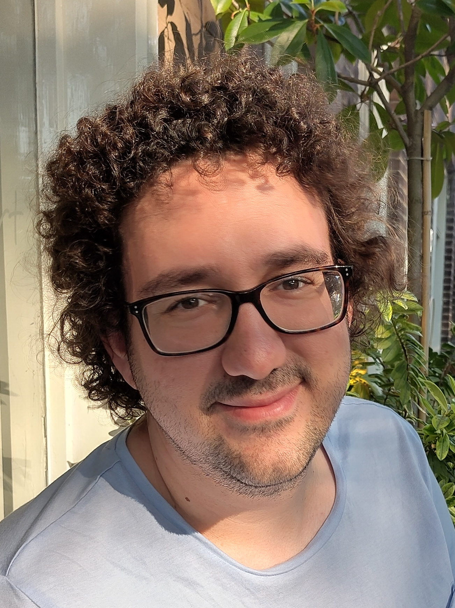

Pim Otte

I am a PhD-candidate at Utrecht University on the topic of "Type Theory for Education", with supervision from Johan Commelin, Paige Randall North and Jim Portegies. As a part of my PhD, I am one of the developers of Waterproof, an educational tool for teaching mathematics with a proof assistant. In a broad sense, I am interested in type theory, theorem provers, formalization of mathematics and applications of these in education.
If you are a student interested in doing a project involving Waterproof, proof assistants in education, formalization of mathematics (in particular graph theory), or usability of proof assistants, feel free to contact me.
Before this I worked as a teacher, software engineer and consultant at Quintor. I obtained my BSc and MSc Applied Mathematics at TU Delft.